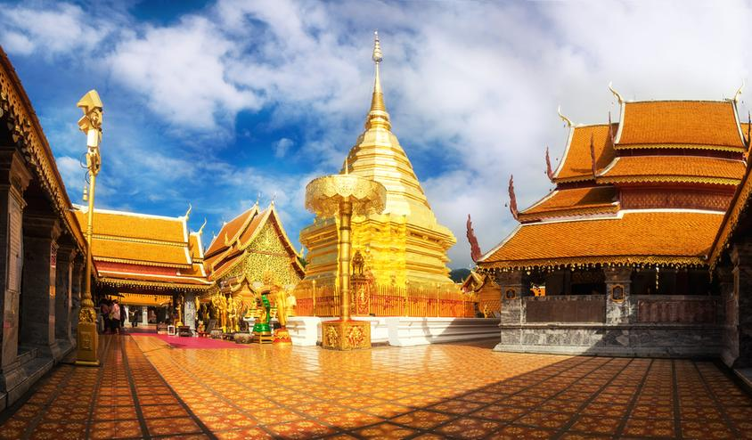
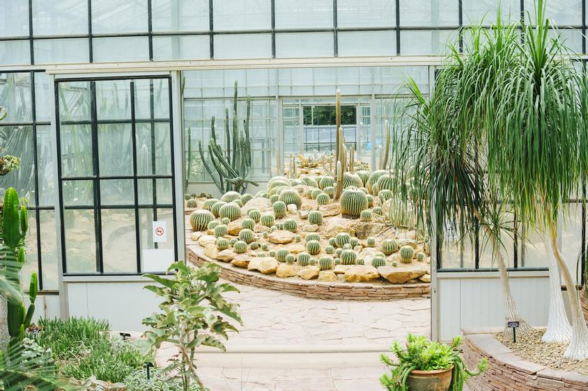

ถนนคนเดินท่าแพ

ถนนคนเดินท่าแพ ถนนที่เพื่อนๆ จะได้สัมผัสวิถีชีวิตและความเป็นพื้นเมืองของชาวเชียงใหม่ยามค่ำคืนได้อย่างใกล้ชิด บริเวณถนนคนเดินแห่งนี้เราจะได้ชิม ช้อป ชิล ทั้งอาหาร Street Food ขึ้นชื่อ ผลไม้พื้นเมือง ได้ช้อปสินค้า Handmade สินค้าแฟชั่น ซื้อของฝากจากเชียงใหม่ไปให้คนใกล้ชิด โดยถนนคนเดินท่าแพจะเริ่มจากประตูเมืองท่าแพไปจนสุดถนนราชดำเนิน เรียกได้ว่าเดินชิล เดินช้อป เดินกินกันจนอิ่มเลยทีเดียว
ที่อยู่ : ประตูท่าแพ ถ.มูลเมือง ต.ศรีภูมิ อ.เมือง จ.เชียงใหม่ 50200 เวลาเปิด – ปิด : วันอาทิตย์ 17.00 – 22.00 น. ค่าเข้า : ฟรี
อุทยานแห่งชาติดอยอินทนนท์

สูงสุดแดนสยามก็คือดอยอินทนนท์ด้วยความสูงจากระดับน้ำทะเล 2,565 เมตร บนตามเส้นทางการขึ้นดอยอินทนนท์ก็มีสถานที่ท่องเที่ยวให้เราได้สัมผัสกับธรรมชาติและความงามของเมืองเหนืออยู่หลายแห่ง ไม่ว่าจะเป็นพระมหาธาตุนภเมทนีดลและพระมหาธาตุนภพลภูมิสิริ, กิ่วแม่ปาน, สถานีเกษตรหลวงอินทนนท์, บ้านแม่กลางหลวง, บ้านผาหมอน, น้ำตกแม่ยะ, น้ำตกวชิรธาร ฯลฯ
ที่อยู่ : ที่ทำการอุทยานแห่งชาติดอยอินทนนท์ กม. ที่ 31 อำเภอจอมทอง จ.เชียงใหม่ 50160 เวลาเปิด – ปิด : ทุกวัน 6.00 – 18.00 น. ค่าเข้า : ชาวไทย ผู้ใหญ่ 50 บาท, เด็ก 20 บาท ชาวต่างชาติ ผู้ใหญ่ 300 บาท, เด็ก 150 บาท
ม่อนแจ่ม เชียงใหม่

ม่อนแจ่ม ดินแดนแห่งขุนเขา ทะเลหมอก และดอกไม้ ที่เที่ยวเชียงใหม่ที่เราจะได้สัมผัสลมหนาวและวิวทิวทัศน์ของภูเขาสุดลูกหูลูกตา อากาศที่ม่อนแจ่มค่อนข้างเย็นสบายตลอดทั้งปี ทุกๆ เช้าจะมีหมอกให้เราได้ชม และอากาศจะหนาวมากที่สุดโดยเฉพาะช่วงฤดูหนาวประมาณเดือนพฤศจิกายน – มกราคม ในช่วงฤดูหนาวบนม่อนแจ่มก็จะมีการปลูกดอกไม้เมืองหนาวสวยๆ บริเวณด้านบนม่อนแจ่มก็มีร้านอาหาร มีศาลาไม้ให้เราได้นั่งจิบเครื่องดื่ม รับประทานอาหารไปพร้อมกับชมวิวสวยๆ ด้วย
ที่อยู่ : ต.แม่แรม อ.แม่ริม จ.เชียงใหม่ 50180 เวลาเปิด – ปิด : ทุกวัน 7.00 – 20.00 น. ค่าเข้า : ฟรี
แกรนด์แคนยอน
หากใครเป็นสายเอ็กซ์ตรีม ชื่นชอบการท่องเที่ยวแนวผจญภัยสุดท้าทายและได้เล่นน้ำด้วย แกรนด์แคนยอนเชียงใหม่ถือว่าเป็นที่เที่ยวเชียงใหม่ที่ตอบโจทย์สุดๆ เพราะที่นี่เป็นแอ่งน้ำขนาดใหญ่เหมือนแกรนด์แคนยอนที่รัฐแอริโซนา ประเทศสหรัฐอเมริกา เป็นสถานที่ท่องเที่ยวเชียงใหม่ที่เป็นที่นิยมทั้งนักท่องเที่ยวไทยและต่างชาติ โดยเราสามารถเช่าห่วงยางเล่นน้ำได้ หรือจะเช่าเรือยางพายเรือ นั่งทานอาหารภายในแกรนด์แคนยอนได้ด้วยเช่นกัน
ที่อยู่ : 244 หมู่ 3 ต.น้ำแพร่ อ.หางดง จ.เชียงใหม่ 50230 เวลาเปิด – ปิด : ทุกวัน 8.00 - 19.00 น. ค่าเข้า : 50 บาท
วัดพระธาตุดอยสุเทพ
วัดพระธาตุดอยสุเทพ วัดคู่บ้านคู่เมืองของชาวเชียงใหม่ที่ต้องแวะไปสักการะให้ได้เมื่อมาเยือนเชียงใหม่ วัดพระธาตุดอยสุเทพตั้งอยู่บนยอดดอยสุเทพโดยเราจะได้นมัสการพระบรมสารีริกธาตุของพระพุทธเจ้าเพื่อสิริมงคลแก่ชีวิต ด้วยการเดินขึ้นบันไดนาคไปสู่ตัววัดทั้งหมด 306 ขั้น แต่หากใครเดินขึ้นไม่ไหวก็มีบริการรถรางไฟฟ้าให้ด้วย
ที่อยู่ : ถ.ศรีวิชัย ต.สุเทพ อ.เมือง จ.เชียงใหม่ 50200 เวลาเปิด – ปิด : ทุกวัน 6.00 - 18.00 น. ค่าเข้า : ค่าบริการรถรางไฟฟ้าขึ้น – ลง คนละ 20 บาท
ดอยอ่างขาง
ดอยอ่างขางสถานที่ท่องเที่ยวทางธรรมชาติเชียงใหม่ที่เราจะได้สัมผัสอากาศเย็นๆ พร้อมชมดอกไม้ พืชผักเมืองหนาว ทะเลหมอก ดอกพญาเสือโคร่ง และอื่นๆ อีกมากมาย ซึ่งบนดอยอ่างขางนั้นมีสถานที่ท่องเที่ยวสำคัญหลายจุดให้เราได้ไปปักหมุดเช็คอินเพียบ ทั้งสถานีเกษตรหลวงอ่างขาง, ไร่สตรอว์เบอร์รีบ้านนอแล, ไร่ชา 2000, จุดชมวิวม่อนสน, จุดชมวิวซุ่ยถัง เป็นต้น บอกเลยว่าใครที่ชื่นชอบการชมดอกนางพญาเสือโคร่งหรือซากุระเมืองไทย ดอยอ่างขางนี่แหละคือที่ที่จะทำให้เราได้ชมความงามอย่างสมใจ
ที่อยู่ : หมู่บ้านคุ้ม หมู่ที่ 5 ต.แม่งอน อ.ฝาง จ.เชียงใหม่ เวลาเปิด – ปิด : ทุกวัน ค่าเข้า : แต่ละสถานที่มีค่าเข้าแตกต่างกัน
สวนสัตว์เชียงใหม่

สวนสัตว์เชียงใหม่เป็นสวนสัตว์ขนาดใหญ่บนพื้นที่กว่า 531 ไร่ ที่มีสัตว์นานาชนิดกว่า 7,000 ตัว ให้เราได้ชมกัน ไม่ว่าจะเป็นสัตว์ยอดฮิตที่ต้องไปชมเมื่อมาถึงที่นี่อย่างหมีแพนด้า นกชนิดต่างๆ กว่า 800 ตัว นกเพนกวิน แมวนํ้า ชะนี สัตว์น้ำจืดกว่า 60 ชนิด ปลาบึกยักษ์ ฯลฯ ภายในสวนสัตว์ยังมีการแสดงความสามารถสัตว์ตลอดทั้งวันให้เราได้ชมกันอย่างเพลิดเพลินอีกด้วย
ที่อยู่ : 100 ถ.ห้วยแก้ว ต.สุเทพ อ.เมือง จ.เชียงใหม่ เวลาเปิด – ปิด : ทุกวัน 8.00 น. - 17.00 น.
วันนิมมาน เชียงใหม่
วันนิมมานเรียกได้ว่าเป็นแลนด์มาร์คแห่งใหม่ของเชียงใหม่ที่ต้องรีบไปปักหมุดเช็คอินก่อนใครเพื่อน ที่นี่เป็นแหล่งรวมร้านค้า ศิลปะ วัฒนธรรม และความร่วมสมัยบนถนนนิมมานเหมินทร์ ภายในมีทั้งร้านอาหาร ร้านค้า ร้านกาแฟ แกลลอรี่แสดงผลงานศิลปะ ท่ามกลางบรรยากาศของสถาปัตยกรรมสไตล์ยุโรปที่ผสมผสานกับสไตล์ล้านนาได้อย่างลงตัว
ที่อยู่ : ถนนนิมมานเหมินท์ ซอย 1 ต.สุเทพ อ.เมือง จ.เชียงใหม่ 50200 เบอร์โทรศัพท์ : 052- 080- 900
แม่กำปอง เชียงใหม่

หมู่บ้านสุด Slow Life ที่โอบล้อมด้วยธรรมชาติของผืนป่าและลำธาร เสน่ห์ของหมู่บ้านแห่งนี้คือความเงียบสงบและธรรมชาติแสนบริสุทธิ์ พร้อมโฮมสเตย์ให้เราได้พักผ่อนใกล้ชิดกับวิถีชีวิตชาวบ้าน ภายในหมู่บ้านมีน้ำตกแม่กำปอง จุดชมวิว ศูนย์พัฒนาโครงการหลวงตีนตก ผาน้ำลอด วัดกันธาพฤกษา ร้านกาแฟท่ามกลางลำธารและธรรมชาติหลายร้าน เช่น ร้านสว่างคาตา ร้าน Teddu cafe ร้านกาแฟบ้านริมห้วยลุงปุ๊ด & ป้าเป็ง ร้านกาแฟชมนก ชมไม้ ฯลฯ
ที่อยู่ : หมู่บ้านแม่กำปอง อ.แม่ออน จ.เชียงใหม่ 50130 เวลาเปิด – ปิด : 24 ชั่วโมง ค่าเข้า : ฟรี
สวนพฤกษศาสตร์สมเด็จพระนางเจ้าสิริกิติ์
เชื่อว่าหลายๆ คนคงจะเคยเห็นรูปต้นกระบองเพชรขนาดยักษ์ที่เหล่าฮิปสเตอร์ถ่ายรูปลง IG กันบ่อยๆ ซึ่งแลนด์มาร์คนั้นอยู่ที่สวนพฤกษศาสตร์สมเด็จพระนางเจ้าสิริกิติ์นี้เอง ภายในสวนพฤกษศาสตร์ถูกแบ่งออกเป็นโซนต่างๆ มากมาย ไม่ว่าจะเป็นนิทรรศการพรรณไม้ไทย เรือนกล้วยไม้ไทย อาคารพรรณไม้ในเขตป่าดงดิบทั่วทุกภูมิภาคของเอเชีย ฯลฯ อีกทั้งยังมี Canopy Walkway ทางเดินชมธรรมชาติลอยฟ้าให้เราได้เดินชมธรรมชาติ ถ่ายรูปเก๋ๆ กันด้วย
ที่อยู่ : องค์การสวนพฤกษศาสตร์ อำเภอแม่ริม จังหวัดเชียงใหม่ 50180 เวลาเปิด – ปิด : ทุกวัน 8.30 - 17.00 น
ค่าเข้า : ผู้ใหญ่ 40 บาท นักเรียน นักศึกษา 20 บาท ผู้ใหญ่อายุเกิน 60 ปี ภิกษุ สมาเณร เด็กอายุต่ำกว่า 12 เข้าฟรี รถยนต์ 4 ล้อ คันละ 100 บาท รถบัส คันละ 200 บาท